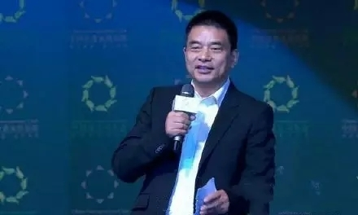
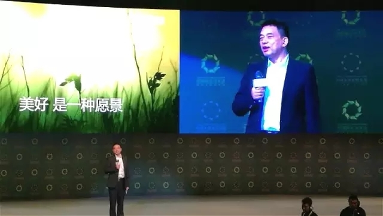
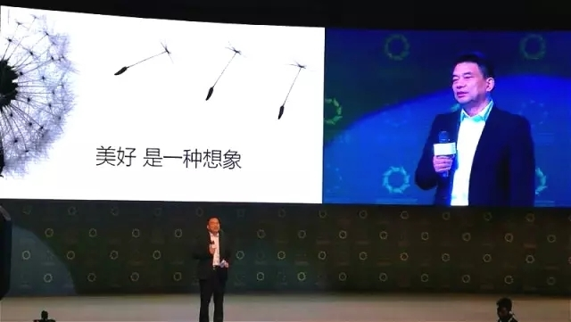
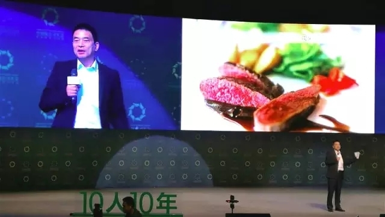

2016.4.24
【绿公司年会】刘永好：让我们谈谈“美好” ，谈谈“未来”

站在2016年看2026年会怎样？4月23日的绿公司年会压轴环节“十人看十年”中，十位不同领域的企业家畅谈他们眼中的未来。新希望董事长刘永好表示未来是与世界共享美好。那么“美好”又是什么？如何与世界共享？以下内容摘自演讲原文。
美好是一种愿景
我小时候很穷，不是我一个人穷，全国的人都很穷。我20岁以前没穿过鞋，天天都没吃饱饭，所以那个时候我的愿景是天天吃饱饭，一个月吃一顿回锅肉，有鞋穿，这是当时的愿景。
今天我的愿景是什么呢？经过30多年的努力，企业发展了，有了几万员工，也有相应的收益，我想的更多的是我的女儿、儿子，他们是不是愿意做这个企业，爱这个企业，我们的集团能不能有一批有担当的年轻人，他们能不能做得比我还好。实际上我是非常希望他们能够接过这个好的班。我做什么呢？人家说我还年轻，其实世界那么大，我也想去看一看。
美好是一种想象
对农民来说想什么呢？农民的孩子能够到城里接受教育，自己在农村从事现代农业，能够照顾家里的父母，同时又有一个较好的收入，这是农民的想象。城里人想什么呢？洁净的空气、居有定所、能够有一个体面的工作和较好的收入。商人的想象是什么呢？我们是想象能够持续美好地做出更好的产品。
确实是这样，中国改革开放30多年了，当年跟我在一块儿讨论问题，在北京开会的人现在所剩无几。有人说民营企业叫“各领风骚三五年”，是的，做企业难，做民营企业更难。我们这些民营企业家能够比较长存，能够做百年老店，这是我们的想象，也是我们的一个愿景。
今天引领新经济的一些企业，包括像马云，包括这些互联网企业，它们突飞猛进、春风得意，取得相当的进步，受到世人尊敬的同时，其实马云也有压力，怎么样能够持续地发展，今年做得好，明年能领先，十年、五十年以后是不是还能保持领先呢？这就是我们的想象。
美好是一种行动
我们看到每一个人、每一类人都对美好有一个不同的注解，但真正的美好是实现的过程，是动态的，美好需要行动。
我想举一个例子，有一个山东农民，叫张传利，今年53岁，以前他种10亩地，养了10头猪，大概一年的收入平均4万块左右，有时还要少一些，当然不如外出务工。但是最近他很高兴，他们过上了好的日子，因为他儿子在城里面上学，在农村也有自己的房子，既能够照顾父母，同时他一年的收入能够达到20万。这20万对农村来说是不错的了，他没有请人，就靠他们一对夫妇。他能够过上有尊严的生活，应该说做得不错。因为今天他不是一个人在养猪，他是有一个产业的体系来支持他，种源、技术、市场、金融，方方面面政府在支持他。
我们的企业形成了联合体，叫新好养殖模式，而我们的企业就做这样的事。新希望集团这两年就在做这样的转型，我们希望通过努力，带动数十万农民组建家庭农场，让他们一年有差不多20万的收入，我觉得做这样的事是光荣的，是骄傲的。因为不但我们发展了，我们转型了，我们从生产饲料、卖肉的，变成了金融、技术、市场，为养殖场服务的服务商，还让农民获益。
第二个例子，大概上周澳大利亚总理带着一千多个企业家来到中国，在宴会上最拿手的一道菜就是牛排，而这个牛排从哪里来？是从澳大利亚来的。但是大家知不知道这个牛排姓“中”，是中国企业控制收购的当地企业生产的牛排。另外，这次澳大利亚总理访华的时候，在人民大会堂，两国总理见证了中澳现代产业园区舟山项目的签订，而这个项目是政府支持、企业主导、市场化运作的产物，很荣幸新希望是主要的参与者，有两国总理的见证，说明政府支持它，我们将用一种崭新的办法争取把舟山这个基地做成亚洲最大的高端动物蛋白粉，贸易、加工、储藏和食品安全的基地。
我感到骄傲，一个民营企业家能够参与这样的国家的大事，这是顺潮流而动，这是我值得骄傲的事，这样的事是我们的行动，是美好的行动。
对未来的美好，我们有太多的想象和期待，但最美好的是我们面向未来的点滴成长和进步，万物之中成长最美，自然之中，希望最新。让我们始终有一颗年轻的心，不断的成长，为未来、为美好而努力。